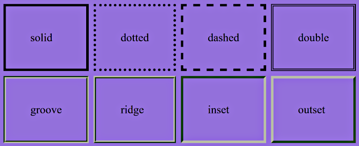

Indiquer les noms de polices possibles par ordre de préférence :
- font-family: police1, police2, police3, police4;
Si le navigateur a la police 1, il l'utilisera. Sinon, il regarde s'il a la police 2, puis la police 3...
Utilisez des guillemets si le nom de la police comporte des espaces. Essayez de toujours mettre comme
dernière police possible "serif" ou "sans-serif":
- font-family: "Arial Black", Arial, Verdana, sans-serif;
Indiquer la taille du texte, plusieurs unités sont possibles :
- px (pixels)
- % (pourcentage, 100% = normal)
- em (taille relative, 1.0 = normal)
- ex (taille relative à la hauteur de la lettre "x". 1.0 = normal)
Nom de taille :
- xx-small (très très petit)
- x-small (très petit)
- small (petit)
- medium (moyen)
- large (grand)
- x-large (très grand)
- xx-large (très très grand)
- bold (gras)
- bolder (plus gras)
- lighter (plus fin)
- normal (normal par défaut)
- italic (italique)
- oblique (autre façon de mettre en italique)
- normal (normal par défaut)
- underline (souligné)
- overline (ligne au-dessus)
- line-through (barré)
- blink (clignotant)
- none (normal par défaut)
- small-caps (petites capitales)
- normal (normal par défaut)
- uppercase (tout mettre en majuscules)
- lowercase (tout mettre en minuscules)
- capitalize (début des mots en majuscules)
- none (normal par défaut)
Indiquez dans n'importe quel ordre des valeurs possibles pour font-family, font-weight, font-style, fontsize, font-variant.
Vous n'êtes pas obligés de mettre une valeur pour chacune de ces propriétés.
font:Arial, bold, 16px; mettra votre texte en Arial, gras, 16 pixels
- left (à gauche par défaut)
- center (centré)
- right (à droite)
- justify (texte justifié prend toute la largeur de la page)
A utiliser dans des cellules de tableau
- top (en haut)
- middle (au milieu)
- bottom (en bas)
Indiquer une valeur en pixels (px) ou en pourcentage (%)
Indiquer une valeur en px ou em. Une valeur positive augmente l'espace, une valeur négative le réduit.
Indiquer une valeur en px, em, %... Une valeur positive augmente l'espace, une valeur négative le réduit.
Indiquez une valeur en pixels (px) pour définir l'alinéa de vos paragraphes
Vos paragraphes commenceront avec le retrait que vous avez indiqué
- normal (le passage à la ligne est automatique par défaut)
- nowrap (pas de passage à la ligne automatique, sauf si une balise xHTML comme <br /> est présente)
- pre (le passage à la ligne se fait comme le texte saisi dans le code source comme balise xHTML <pre>)
Indiquer une couleur avec l'une des méthodes suivantes :
- en indiquant le nom de la couleur en anglais (black, blue, green, white, red...)
- en indiquant la couleur en RGB : rgb (128, 255, 0)
- en indiquant la couleur en hexadécimal (#CC48A1)
Chaque couleur à un code hexadécimal. Certains logiciels de dessin, comme Photoshop, Gimp et Paint.NET, vous indiquent les couleurs en hexadécimal.
Il vous est alors facile de copier-coller le code hexadécimal d'une couleur dans votre fichier CSS.
Spécifie la couleur de l’arrière-plan:
- transparent: La valeur initiale (ou « par défaut ») du fond d'un élément est transparent, ce qui permet à un élément de venir se superposer à un autre, tout en permettant de toujours voir le fond par transparence.
La plupart du temps, ce ne sera pas utile de le déclarer, sauf si on souhaite annuler une couleur de fond qui aurait été préalablement définie pour cet élément.
- inherit: permet à l'élément d'hériter de la propriété background-color de son parent. On croit souvent par erreur que les couleurs de fond sont héritées par défaut, mais ce n'est pas le cas ; et lorsque l'on voit
la couleur de fond du parent s'appliquer sur l'élément enfant, c'est parce que le fond de ce dernier est transparent.
(Valeurs: couleurs; transparent; inherit;)
La propriété CSS background permet de définir toutes les propriétés de style de fond. La propriété background comprend les propriétés suivantes :
Indiquer une ou plusieurs valeurs issues des propriétés background-image, background-repeat, background-attachment, background-position
L'ordre des valeurs n'a pas d'importance et vous n'êtes pas obligés de mettre toutes les valeurs de ces propriétés (au moins une suffit)
Exemple: background:url("images/fond.png") no-repeat fixed top right;
/* Le fond fond.png reste affiché en haut à droite de l'écran et n'est pas répété */
Pour règler l'opacité du fond sans toucher au premier plan (texte, images etc), utiliser les couleurs en rgba (red, green, blue, alpha) ou lcha (lightness, chroma, hue, alpha). Alpha est la valeur d'opacité de 0 (0% totalement transparent) à 1 (100% totalement opaque).
Exemples:
- background: rgba(147, 112, 219, 0.3);
- background: lch(56.2% 83.6 357.4 / 0.93);
La propriété background-attachment définit si l'image du fond est fixe ou si elle défilera avec le reste de la page.
(Valeurs: fixed; et scroll;)
La propriété CSS background-blend-mode définit la façon dont les images d'arrière-plan doivent être fusionnées entre elles et avec la couleur d'arrière-plan.
(Valeurs: normal; multiply; hard-light; difference;)
La propriété d'Arrière-plan CSS background-clip permet de gérer les limites de la zone d'arrière plan à l'intérieur de l'élément. background-clip va influencer l'affichage de l'image d'arrière-plan ou de la couleur d'arrière-plan,
déclarées avec la propriété CSS background-image, background-color ou background.
(Valeurs: border-box; padding-box; content-box; text;)
Spécifie la couleur de l’arrière-plan.
- transparent: La valeur initiale (ou « par défaut ») du fond d'un élément est transparent, ce qui permet à un élément de venir se superposer à un autre, tout en permettant de toujours voir le fond par transparence.
La plupart du temps, ce ne sera pas utile de le déclarer, sauf si on souhaite annuler une couleur de fond qui aurait été préalablement définie pour cet élément.
- inherit: permet à l'élément d'hériter de la propriété background-color de son parent. On croit souvent par erreur que les couleurs de fond sont héritées par défaut, mais ce n'est pas le cas ; et lorsque l'on voit
la couleur de fond du parent s'appliquer sur l'élément enfant, c'est parce que le fond de ce dernier est transparent.
(Valeurs: couleurs; transparent; inherit;)
Permet de définir une ou plusieurs images comme arrière-plan. Les images sont dessinées les unes au-dessus des autres. La première image indiquée est dessinée comme étant la plus proche de l'utilisateur. Attention, background-origin est ignorée lorsque background-attachment vaut fixed. Les bordures de l'élément sont dessinés par-dessus l'arrière-plan et la couleur background-color est dessinée sous l'arrière-plan. La position et les limites de chaque image sont gérées grâce aux propriétés background-clip et background-origin.
La propriété background-origin détermine l'origine de l'arrière-plan background-image à partir de la bordure, à l'intérieur de la bordure ou à l'intérieur de la zone de remplissage (padding).
- border-box: l'arrière-plan est positionné relativement à la boîte de bordure.
- padding-box: l'arrière-plan est positionné relativement à la boîte de remplissage (padding).
- content-box: l'arrière-plan est positionné relativement à la boîte de contenu.
(Valeurs: border-box; padding-box; content-box;)
2 façons de faire :
en notant une distance en px ou %, par rapport au coin en haut à gauche
background-position: 50px 200px; (50 px à droite, 200px en bas)
en utilisant des valeurs prédéfinies, une pour la verticale et une pour l'horizontale :
- top (en haut, verticalement)
- center (au milieu, verticalement)
- bottom (en bas, verticalement)
- left (à gauche, horizontalement)
- center (au centre, horizontalement)
- right (à droite, horizontalement)
ex: background-position : bottom right; (en bas à droite)
(Valeurs: top; bottom; left; right; center; en cm, em, px, %, ch)
La propriété background-position-x définit la position horizontale initiale de chaque image d'arrière-plan par rapport à l'origine, définie avec background-origin.
(Valeurs: left; right; center; en cm, em, px, %,)
La propriété background-position-y définit la position verticale initiale de chaque image d'arrière-plan. La position est relative à l'origine définie par background-origin.
(Valeurs: top; bottom; center; en cm, em, px, %,)
La propriété background-repeat définit la façon dont les images utilisées en arrière-plan sont répétées. Une image d'arrière-plan pourra ainsi être répétée sur l'axe horizontal, l'axe vertical ou bien ne pas être répétée.
(Valeurs: repeat; no-repeat; space; round;)
La propriété CSS background-size définit la taille des images d'arrière-plan pour l'élément. La taille de l'image peut être contrainte, complètement ou partiellement afin de conserver ses proportions.
L'espace qui n'est pas rempli par l'image d'arrière-plan aura la couleur définie par la propriété background-color. De plus, la couleur d'arrière-plan sera visible si l'image d'arrière-plan est transparente.
(Valeurs: contain; cover; auto;)
Valeur en px, %, em, ou encore "auto" (valeur par défaut, la largeur dépendra du texte à l'intérieur)
Valeur en px, %, em, ou encore "auto" (valeur par défaut, la hauteur dépendra du texte à l'intérieur)
Valeur en px, %, em, ou encore "auto"
Valeur en px, %, em, ou encore "auto"
Valeur en px, %, em, ou encore "auto"
Valeur en px, %, em, ou encore "auto"
Indiquer une valeur en px.
Indiquer une valeur de couleur.
Les différents types de bordures sont:
- none (pas de bordure par défaut)
- solid (un trait simple)
- dotted (bordure en pointillé)
- dashed (bordure en tiret)
- double (bordure double)
- groove (bordure en relief)
- ridge (un autre effet de relief)
- inset (bordure avec un effet 3D global enfoncé)
- outset (bordure avec un effet 3D global surélevé)

Indiquer la couleur, l'épaisseur et le type de bordure pour la bordure gauche.
border-left: 2px inset blue; (bordure bleue de 2px avec effet 3D "enfoncé").
Vous pouvez ne laisser apparaître qu'une seule bordure, si vous le souhaitez.
Idem
Idem
Idem
Indiquer l'apparence des bordures en haut, à droite, en bas et à gauche.
La propriété outline est une propriété raccourcie qui permet de définir, dans une seule déclaration, une ou plusieurs des propriétés parmi outline-style, outline-width et outline-color
Les contours (outline) diffèrent des bordures, notamment sur les points suivants :
- les contours ne prennent pas d'espace et sont dessinés au-dessus du contenu.
- les contours peuvent avoir une forme qui n'est pas rectangulaire. Ils seront rectangulaires avec Gecko et Firefox mais Opera dessinera une forme autour du contenu.
Pour y voir un peu plus clair ^^
Indiquer une valeur comme 20px, 1.5em...
Indiquer une valeur comme 20px, 1.5em...
Indiquer une valeur comme 20px, 1.5em...
Indiquer une valeur comme 20px, 1.5em...
Indiquer de 1 à 4 valeurs à la suite:
- 1 valeur: "margin: 10px;" pour le haut, le bas, la gauche et la droite.
- 2 valeurs: "margin: 10px 20px;" la première haut/bas, la seconde gauche/droite.
- 3 valeurs: "margin: 10px 20px 10px;" la première haut, la seconde gauche/droite, la troisième bas.
- 4 valeurs: "margin: 10px 20px 10px 20px;" respectivement haut, droite, bas, gauche.
Indiquer une valeur comme 20px, 1.5em...
Idem
Idem
Idem
Indiquer de 1 à 4 valeurs à la suite:
- 1 valeur: "padding: 10px;" pour le haut, le bas, la gauche et la droite.
- 2 valeurs: "padding: 10px 20px;" la première haut/bas, la seconde gauche/droite.
- 3 valeurs: "padding: 10px 20px 10px;" la première haut, la seconde gauche/droite, la troisième bas.
- 4 valeurs: "padding: 10px 20px 10px 20px;" respectivement haut, droite, bas, gauche.
- none : l'élément ne sera pas affiché
- block : l'élément devient de type "block" (bloc, comme <p>)
- inline : l'élément devient de type "inline" (en ligne, comme <strong>)
- list-item : l'élément devient de type "élément de liste à puce" (comme <li>)
La propriété display définit le type d'affichage utilisée pour le rendu d'un élément (de bloc ou en ligne) et la disposition utilisée pour ses éléments fils (grille ou boîtes flexibles).
Le type d'affichage donné par display possède deux composantes :
-le type d'affichage extérieur qui définit comment la boîte participe au flux
-le type d'affichage intérieur qui définit l'organisation des éléments enfants.
Pour plus d'information visitez le site: MDN Web Docs
La propriété visibility peut être utilisée afin de cacher un élément tout en conservant occupé l'espace dans lequel il aurait été visible. Elle permet aussi de masquer des lignes ou des colonnes dans un tableau.
display: none; fait complètement disparaître l'élément, tandis que visibility:hidden; masque l'élément, qui continue quand même à prendre de la place sur l'écran.
- hidden : masqué
- visible : visible (par défaut)
- Exemple avec un paragraphe:
p
{
visibility: hidden; /*les paragraphes ne seront pas visibles*/
}
.pvisible
{
visibility: visible; /*sauf ceux avec la class pvisible*/
}
- Exemple avec un tableau:
.col
{
visibility: collapse; /*les lignes de tableau avec la class col seront repliées*/
}
Pour les lignes, les colonnes, les groupes de lignes et les groupes de colonnes d'un tableau, les éléments sont masqués et l'espace occupé est retiré (comme si on avait appliqué display: none aux colonnes/lignes du tableau).
La taille des autres lignes et colonnes continue d'être calculée comme si les lignes et colonnes masquées étaient présentes. Cela a été conçu afin de pouvoir retirer rapidement des lignes et/ou des colonnes sans avoir à recalculer les dimensions pour l'ensemble du tableau.
La propriété clip-path remplace la propriété clip désormais dépréciée.
La propriété clip-path empêche une portion d'un élément d'être affichée en définissant une région qui sera rogner. Seule une zone spécifique de l'élément sera affichée.
Par exemple avec une image:
- clip-path: circle(40%);
- clip-path: ellipse(130px 140px at 10% 20%);
- clip-path: polygon(50% 0, 100% 50%, 50% 100%, 0 50%);
- clip-path: path('M 0 200 L 0,75 A 5,5 0,0,1 150,75 L 200 200 z');
qui ont pour effet de gauche à droite:
La propriété CSS overflow est une propriété raccourcie qui définit comment gérer le dépassement du contenu d'un élément dans son bloc.
Elle définit les valeurs des propriétés overflow-x et overflow-y.
- visible : tout l'élément sera affiché (par défaut)
- hidden : l'élément sera coupé s'il dépasse les limites définies par height et width, on ne pourra pas voir la partie du texte coupée
- scroll : tout comme hidden, l'élément sera coupé s'il dépasse les limites. Toutefois, cette fois le navigateur ajoutera des barres de défilement pour qu'on puisse voir la suite du texte
- auto : c'est le navigateur qui décide d'ajouter des barres de défilement ou pas, en fonction des cas Bien souvent, utiliser cette valeur revient à utiliser la valeur "scroll"
La propriété float indique qu'un élément doit être retiré du flux normal et doit être placé sur le côté droit ou sur le côté gauche de son conteneur.
Le texte et les autres éléments en ligne (inline) entoureront alors l'élément flottant. L'élément est retiré du flux normal de la page mais s'inscrit toujours dans le flux (contrairement au positionnement absolu).
- left : flottant à gauche
- right : flottant à droite
- none : pas de flottant (par défaut)
La propriété clear indique si un élément peut être situé à côté d'éléments flottants qui le précèdent ou s'il doit être déplacé vers le bas pour être en dessous de ces éléments.
La propriété clear s'applique aux éléments flottants comme aux éléments non-flottants.
- left : supprime l'effet d'un flottant à gauche précédent
- right : supprime l'effet d'un flottant à droite précédent
- both : supprime l'effet d'un flottant précédent, qu'il soit à gauche ou à droite
- none : pas de suppression de l'effet du flottant (par défaut)
Lorsqu'elle est appliquée aux blocs non-flottants, elle déplace le bord de la bordure de l'élément sous le bord de la marge de tous les éléments flottants concernés.
Il y aura fusion des marges (margin collapsing) verticales entre l'élément flottant et le bloc non-flottant mais pas entre les élément flottants.
Lorsqu'elle est appliquée aux éléments flottants, elle déplace le bord de la marge de l'élément sous le bord de la marge de tous les éléments flottants concernés.
Cela impacte la position des éléments flottants suivants car ceux-ci ne peuvent pas être situés plus haut que les éléments flottants qui les précèdent.
Les éléments flottants qui sont dégagés sont les éléments flottants précédant l'élément ciblé, au sein de du même contexte de formatage.
Note : Si un élément ne contient que des éléments flottants, sa hauteur sera nulle. Si on souhaite redimensionner l'élément afin qu'il contienne tous les éléments flottants à l'intérieur, on peut faire flotter ce conteneur ou utiliser clear sur un pseudo-élément remplacé ::after.
#conteneur::after {
content: "";
display: block;
clear: both;
}
Un élément positionné est un élément dont la position calculée est relative, absolute, fixed ou sticky.
- absolute:
Un élément positionné de façon absolue est un élément dont la position calculée est absolute ou fixed.
L'élément est retiré du flux normal et aucun espace n'est laissé pour l'élément sur la page.
Il est ensuite positionné par rapport à son bloc englobant (son ancêtre) positionné le plus proche s'il y en a un, ou sinon par rapport au bloc englobant initial.
La position finale de l'élément est déterminée par les valeurs de top, right, bottom et left.
Cette valeur crée un nouveau contexte d'empilement lorsque z-index ne vaut pas auto. Les éléments positionnés de façon absolue peuvent avoir des marges, ces marges ne fusionnent pas avec les autres marges, si l'élément possède des marges, elles sont ajoutées aux décalages.
- fixed:
Position fixe (fonctionne comme la position absolue). L'élément reste à sa position même quand on descend plus bas dans la page
L'élément est retiré du flux normal et aucun espace n'est laissé pour l'élément sur la page.
L'élément est positionné relativement au bloc englobant initial formé par la zone d'affichage (viewport), sauf si un des blocs englobants a une propriété transform, perspective ou filter qui est différente de none; dans ce cas, c'est celui-ci qui joue le rôle de bloc englobant.
Cela empêche le défilement lorsque la page est parcourue (ou lors de l'impression, le positionne à cette position fixe pour chaque page).
Cette valeur crée toujours un nouveau contexte d'empilement. Certains incohérences existent entre les navigateurs quant au rôle de perspective et filter pour la définition du bloc englobant. La valeur finale de l'élément est déterminée par les valeurs de top, right, bottom et left.
Cette valeur crée toujours un nouveau contexte d'empilement. Pour les documents imprimés, cela se traduit par le placement de l'élément au même endroit pour chacune des pages.
- relative:
Position relative, par rapport à la position "normale" de l'élément
L'élément est positionné dans le flux normal du document puis décalé, par rapport à lui-même, selon les valeurs fournies par top, right, bottom et left. Le décalage n'a pas d'impact sur la position des éléments.
L'espace fourni à l'élément sur la page est le même que celui fourni avec static.
Cette valeur crée un nouveau contexte d'empilement lorsque z-index ne vaut pas auto. L'effet de cette valeur n'est pas défini pour les éléments table-*-group, table-row, table-column, table-cell et table-caption.
- sticky:
Un élément positionné en adhérence est un élément dont la position calculée vaut sticky. Le positionnement adhérent est un mélange de positionnement relatif et de positionnement fixe.
Un tel élément se comporte comme un élément positionné de façon relative jusqu'à ce que son bloc englobant dépasse un seuil donné (par exemple fourni par la valeur de top) au sein du conteneur puis il se comporte ensuite comme un élément fixe jusqu'à atteindre le bord opposé du bloc englobant.
Dans tous les cas, y compris avec les éléments table, cela n'affecte pas la position des autres éléments.
Cette valeur entraîne toujours la création d'un nouveau contexte d'empilement.
On notera qu'un tel élément « adhèrera » au bloc englobant le plus proche qui dispose d'un mécanisme de défilement (c'est-à-dire quand overflow vaut hidden, scroll, auto ou overlay) même s'il n'est pas le bloc englobant de défilement le plus proche : cette valeur ne fonctionnera pas dans un élément pour lequel la propriété vaut overflow: hidden ou auto.
- static:
Comportement normal (par défaut). L'élément est alors positionné dans le flux avec sa position. Les propriétés top, right, bottom, left et z-index ne s'appliquent pas.)
Valeur en px, %, em... à utiliser pour un positionnement absolu, fixe ou relatif
Idem
Idem
Idem
En cas de positionnement absolu par exemple, si 2 éléments se chevauchent, z-index permet d'indiquer quel élément doit être affiché au-dessus de l'autre.
Indiquez un nombre. Plus ce nombre est élevé, plus l'élément sera affiché en avant.
Par exemple, si 2 éléments sont positionnés en absolu avec un z-index de 10 pour l'un et de 20 pour l'autre, celui qui a un z-index de 20 est affiché par-dessus.
Pour les boîtes positionnées (celles pour lesquelles position est différent de static), la propriété z-index définit :
- Le niveau de la boîte dans la pile par rapport au contexte d'empilement courant
- Si la boîte crée un contexte d'empilement local.
Pour les listes non ordonnées (<ul>) :
- disc : un disque noir (par défaut)
- circle : un cercle
- square : un carré
- none : aucune puce ne sera utilisée
Pour les listes ordonnées (<ol>) :
- decimal : des nombres 1, 2, 3, 4, 5... (par défaut)
- decimal-leading-zero : des nombres commençant par zéro (01, 02, 03, 04, 05...)
Ne fonctionne pas sur Internet Explorer
- upper-roman : numérotation romaine, en majuscules (I, II, III, IV, V...)
- lower-roman : numérotation romaine, en minuscules (i, ii, iii, iv, v...)
- upper-alpha : numérotation alphabétique, en majuscules (A, B, C, D, E...)
- lower-alpha : numérotation alphabétique, en minuscules (a, b, c, d, e...)
- lower-greek : numérotation grecque
Ne fonctionne pas sur Internet Explorer
Pour choisir l'opacité. Une valeur de 1 rendra l'élément totalement opaque, une valeur de 0 totalement transparent. Pour cet exemple de 0.6 l'élément sera opaque à 60% (attention il faut un point, pas une virgule).
Comme en HTML, il est possible de mettre des commentaires. Les commentaires ne seront pas affichés, ils servent simplement à indiquer des informations pour vous, par exemple pour vous y retrouver dans un looong fichier CSS.